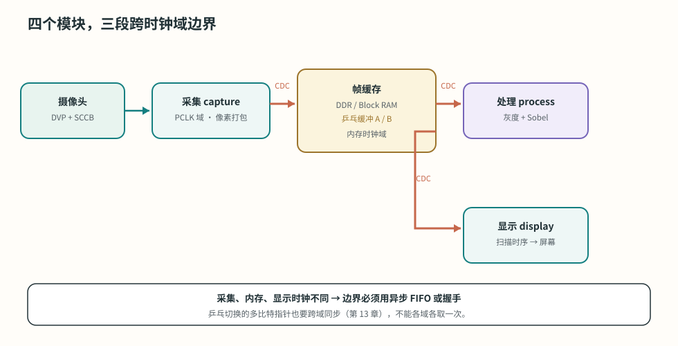
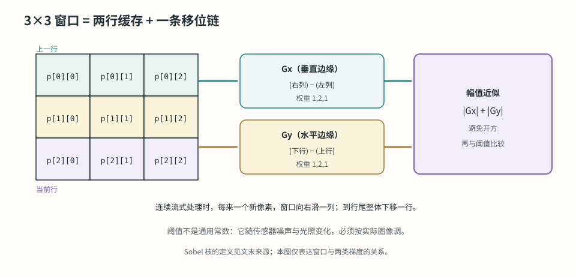

综合项目：摄像头采集、图像处理与显示
把接口、存储、流水线与显示时序串成一个系统，难点不在单个模块，而在数据如何跨时钟域流动、带宽是否够、每个阶段如何被观测。
01 / 系统要解决什么问题
一个嵌入式视觉系统的基本诉求很简单：把摄像头的像素流变成屏幕上的图像，并在中间做一步处理。但一旦落到硬件，就会碰到三个问题：数据要跨时钟域流动（摄像头、内存、显示各自有自己的时钟）、带宽要够（像素率×位宽）、以及每一段要可观测（出问题时知道错在哪一级）。
本章把前面各章串起来：DVP/SCCB 接口（第 9、10 章）、帧缓存与 DDR（第 11 章）、AXI4-Stream（第 19 章）、行缓存流水线（第 12 章）、CDC（第 13 章）、显示时序（第 6 章）、调试（第 23 章）。
02 / 把系统拆成四个模块
模块划分的依据是时钟域与数据形态，而不是代码量。一个可用的最小划分：
| 模块 | 输入 | 输出 | 时钟域 |
|---|---|---|---|
| 采集 camera_capture | DVP 并行像素 + HSYNC/VSYNC/PCLK；SCCB 配置 | 像素流（带有效/行尾） | PCLK |
| 帧缓存 frame_buffer | 写入像素流；读出像素流 | 内存读写（AXI） | 内存时钟 / 像素时钟 |
| 处理 image_processor | 像素流 | 处理后的像素流 | 像素时钟 |
| 显示 display | 扫描时序计数 | RGB + HSYNC/VSYNC/DE | 像素时钟 |

这里出现了一个关键选择：要不要用外部 DDR。若不处理整帧，可以在片内 Block RAM 中做一行/几行的行缓存，省下内存控制器（但这意味着分辨率/帧率受限）。若需要整帧缓存或高分辨率，就需要 DDR 控制器 IP（如 AMD 的 MIG，见 UG586）。两条路线的差异不在 RTL，而在系统带宽与成本。
03 / 采集：DVP 与 SCCB
很多摄像头模块提供 DVP 并行接口和一条类似 I²C 的配置总线（常称 SCCB）。DVP 的时序很直接：
- VSYNC 标记一帧的开始/结束；HSYNC 标记一行；PCLK 每拍（或双沿）送出若干位数据。
- 像素按字节或半字输出。以 RGB565 为例，一个像素占 2 字节，于是两个 PCLK 周期拼成一个像素。
采集模块要做的三件事：用 PCLK 域采样数据、用行计数器判断行/帧边界、把拼好的像素打包成带“有效/行尾/帧尾”标志的流，再送到后续模块。因为 PCLK 与后续模块的时钟无关，这个边界上必须用异步 FIFO 或握手跨越（第 13 章）。
摄像头初始化（分辨率、输出格式、曝光等）通过 SCCB 写寄存器完成。这些寄存器的地址与取值因传感器型号而异，必须查该传感器的数据手册或其参考驱动，不能照抄其他型号的表。这一步也是常见的失败点：配置写不进去或时序不符，后面看到的会是全黑或满屏噪声。
04 / 处理流水线：灰度与 Sobel
处理分两步：先把颜色转成灰度，再用 3×3 卷积做边缘检测。灰度常用 ITU-R BT.601 的亮度权重（约 0.299R + 0.587G + 0.114B），为了避免浮点，用定点近似：
Gray = (77*R + 150*G + 29*B) >> 8系数 77/150/29 是把 0.299/0.587/0.114 乘以 256 后取整的结果（参见 ITU-R BT.601）。截断误差与后续阈值都需要根据实际图像调，而不是当成通用最小值。
Sobel 需要一个滑动 3×3 窗口。它由两个行缓存 + 一条移位寄存器链构成：每个新像素到来时，窗口向右滑动一列，到达行尾时整体下移一行。这正是第 12 章“流水线/行缓存”在二维图像上的应用。

下面的卷积核心是简化版，只展示 Gx/Gy 的加权与幅值近似：
// 3x3 窗口 p[row][col]（row/col = 0..2），p[1][1] 为当前像素
wire signed [11:0] gx, gy;
// Gx 强调垂直边缘：右列减左列
assign gx = (p[0][2] + (p[1][2]<<1) + p[2][2])
- (p[0][0] + (p[1][0]<<1) + p[2][0]);
// Gy 强调水平边缘：下行减上行
assign gy = (p[2][0] + (p[2][1]<<1) + p[2][2])
- (p[0][0] + (p[0][1]<<1) + p[0][2]);
// 幅值近似：|Gx| + |Gy|（避免开方）
wire [11:0] mag = (gx[11] ? -gx : gx) + (gy[11] ? -gy : gy);
wire edge = (mag > THRESHOLD);
// 边沿输出与 valid/ready 同拍寄存（流水线一拍）
always @(posedge clk) begin
if (pix_valid && pix_ready) begin
edge_r <= edge;
valid_r <= 1'b1;
end else valid_r <= 1'b0;
endTHRESHOLD 是调试旋钮：太小会把噪声当边缘，太大则丢失弱边缘。它应该根据实际图像与光照调整，而不是固定一个“通用最优值”。
05 / 帧缓存与乒乓缓冲
采集与显示使用不同的时钟、不同的扫描方式，中间必须用帧缓存解耦。如果采与显共用一块内存且不同步，就会出现“写一半读”的画面撕裂。做法是在内存中开两块帧缓冲，写指向 A 时读指向 B，一帧结束后交换——这就是乒乓缓冲。
指针切换发生在帧边界（如 VSYNC），但读写可能在各自时钟域。因此切换信号（或整块缓冲的所属标志）必须用同步器/握手跨域——不能把同一个多比特地址在两个域里各取一次。这是第 13 章 CDC 规则在系统层的直接应用。
带宽是否够？可以用一个确定性算术先卡一道（以下数字为教学示意）：640×480 分辨率、每像素 RGB565 占 2 字节、60 帧/秒时，
640 × 480 × 2 B × 60 = 36.864 MB/s内存控制器需要同时承载“写入一帧”与“读出一帧”，所以有效需求约为这个数字的数倍（再加上行缓存与突发开销）。具体能不能达到，取决于内存类型、数据宽度、控制器效率与访问模式，必须看实现报告与仿真，不能只靠乘法。
06 / 显示时序：640×480@60
显示模块要做的只是“数点、数行、在每个区间置电平”。以业界沿用的 640×480@60 时序为例：像素时钟约 25.175 MHz，一行共 800 个像素周期（640 可见 + 16 前肩 + 96 同步 + 48 后肩），一帧共 525 行（480 可见 + 10 + 2 + 33）。这些参数属于显示时序规范（参见 VESA），不同分辨率/帧率需换表。
module vga_timing_gen #(
parameter H_VIS=640, H_FP=16, H_SYNC=96, H_BP=48,
parameter V_VIS=480, V_FP=10, V_SYNC=2, V_BP=33
)(
input wire clk_pix, rst_n,
output reg hsync, vsync, de,
output reg [9:0] hcount, vcount
);
localparam H_TOTAL = H_VIS+H_FP+H_SYNC+H_BP; // 800
localparam V_TOTAL = V_VIS+V_FP+V_SYNC+V_BP; // 525
always @(posedge clk_pix or negedge rst_n) begin
if (!rst_n) begin hcount <= 0; vcount <= 0; end
else if (hcount == H_TOTAL-1) begin
hcount <= 0;
vcount <= (vcount == V_TOTAL-1) ? 0 : vcount + 1;
end else hcount <= hcount + 1;
end
always @(*) begin
hsync = ~((hcount >= H_VIS+H_FP) && (hcount < H_VIS+H_FP+H_SYNC));
vsync = ~((vcount >= V_VIS+V_FP) && (vcount < V_VIS+V_FP+V_SYNC));
de = (hcount < H_VIS) && (vcount < V_VIS);
end
endmodule显示侧从帧缓存读像素，必须在 de 有效时恰好取到当前扫描位置的像素。如果读延时固定，可以提前寻址；如果缓冲读延时不确定，就需要 FIFO 预取。这里的坑是采样时刻与 FIFO 水位的对应：一旦水位不足，画面就会出现水平错位。
07 / 集成与分阶段调试
把模块拼起来后，不要指望一次性跑通。调试应该沿数据流分阶段推进，每一阶段只验证一件事（参见第 23 章）：
- 采集阶段：用 ILA 拓住采集模块输出，确认 HSYNC/VSYNC 时序、每帧像素计数等于分辨率，以及 SCCB 配置是否成功。
- 存储阶段：将写入内存前的像素与读回后的像素做逐一对比，排除地址对齐或读写时序问题。
- 处理阶段：输入已知图样（棋盘、条纹），看 Sobel 输出边缘是否符合预期，再调阈值。
- 显示阶段：先输出固定测试图（彩条），确认扫描时序与显示设备同步，再接真实像素。
每一阶段都以“可观测的证据”作为完成条件——ILA 波形、像素计数、对比结果——而不是“看起来像对了”。
08 / 边界与可验证条件
- 本文不给出模块的 LUT/FF/BRAM 用量或可达频率。 这些依赖器件、工具版本与实现，必须看你的实现报告。
- 带宽是算术，能否达到是工程。 36.864 MB/s 只是像素流的理想值；真实带宽还依赖控制器效率、突发长度、刷新与访问冲突。
- 传感器寄存器表不在本文给出。 必须查具体型号的数据手册或参考驱动；照抄其他型号的表会得到黑屏或噪声。
- 阈值、灰度系数与显示参数都是可调量。 它们随传感器、光照与显示设备变化。